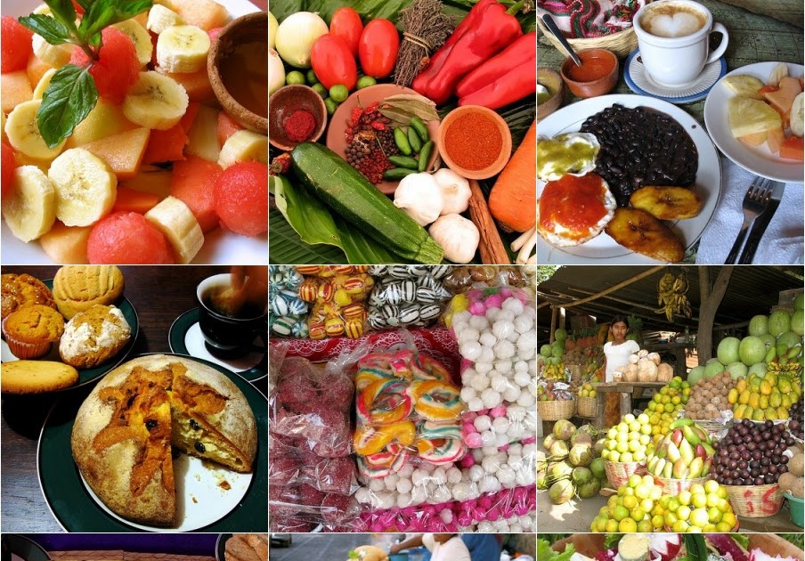

La gastronomía de Huehuetenango es rica y variada, con platos tradicionales que reflejan la cultura y los sabores de la región. Aquí te presento algunas de las delicias culinarias típicas de Huehuetenango. Como, por ejemplo. Tamales de arroz, Arroz con pollo, Tamalitos de chipilin, Atol de elote, Chuchitos, Jocon de pollo y los molletes.
">